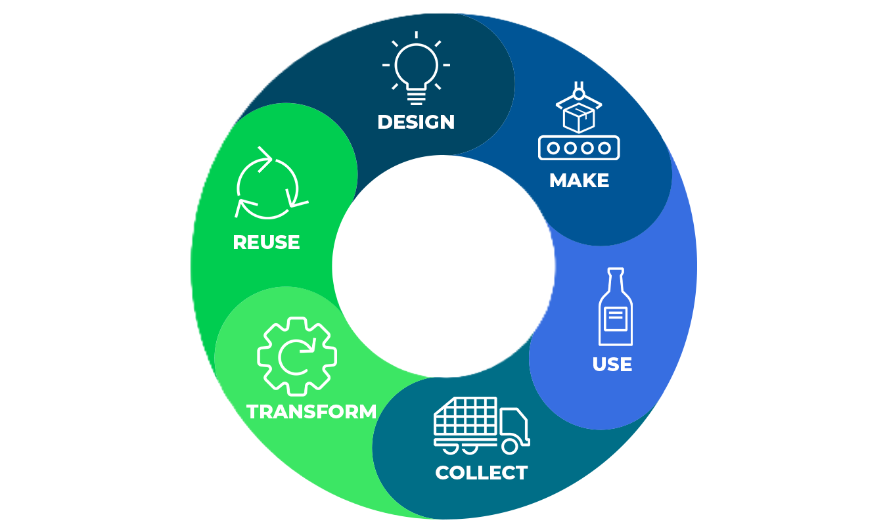

EcoCycle
What is Circular Economy?
The circular economy is an economic system aimed at eliminating waste and continually reusing resources. It focuses on keeping products, materials, and resources in use for as long as possible through recycling, repairing, and remanufacturing — creating a closed-loop system instead of a throwaway one.
Linear vs Circular Economy
| Aspect | Linear Economy | Circular Economy |
|---|---|---|
| Model | Take → Make → Dispose | Make → Use → Reuse / Recycle |
| Resource Use | Uses new raw materials each time | Reuses materials and resources |
| Waste | Ends with waste and pollution | Minimizes or eliminates waste |
| Sustainability | Unsustainable in the long term | Environmentally and economically sustainable |

Environmental Benefits
- Reduces waste sent to landfills and oceans
- Conserves natural resources
- Cuts greenhouse gas emissions
- Promotes use of renewable energy
- Encourages sustainable product design
- Supports biodiversity and cleaner ecosystems